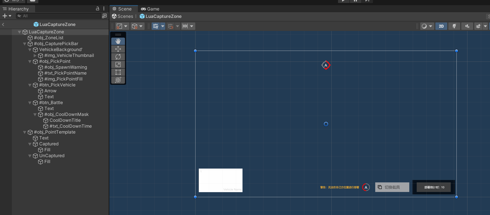
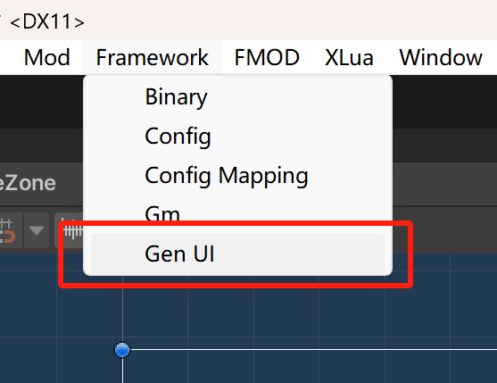
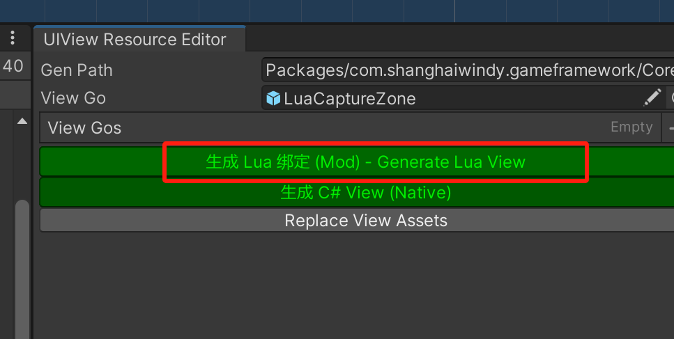
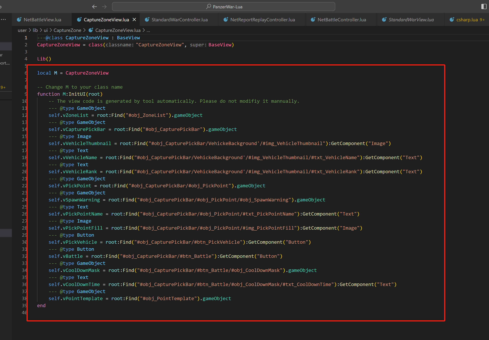
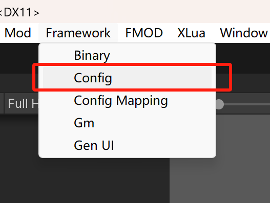
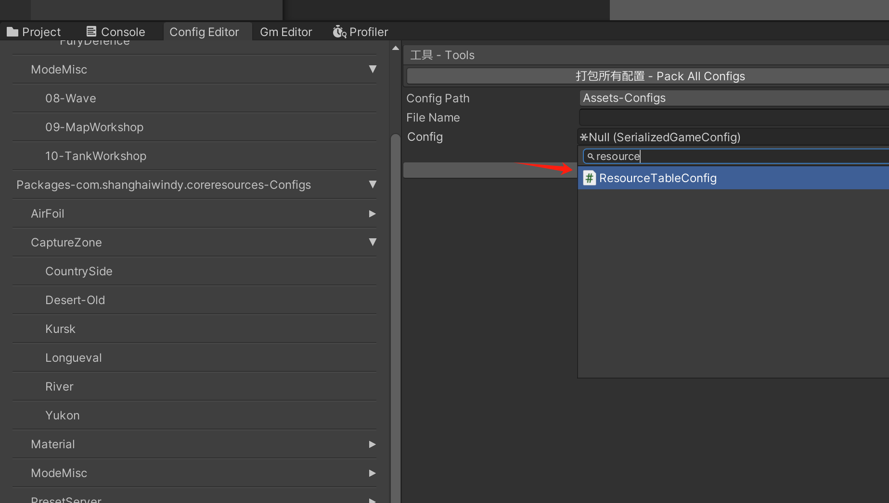
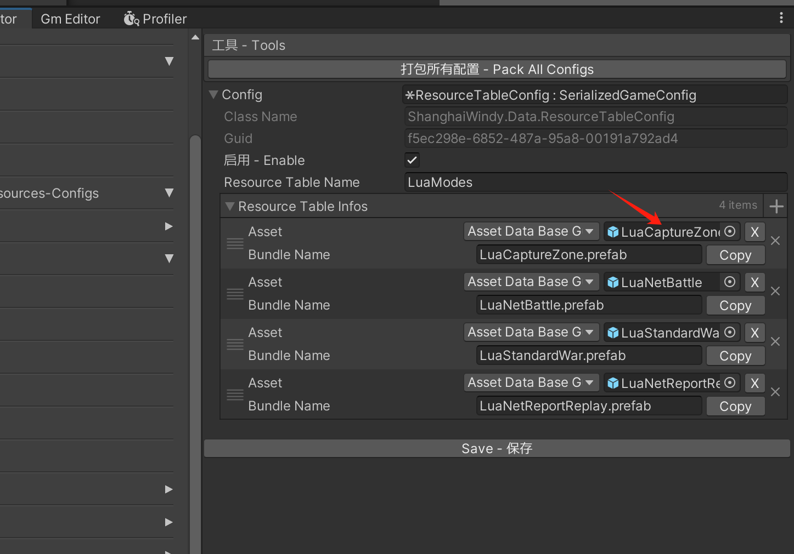
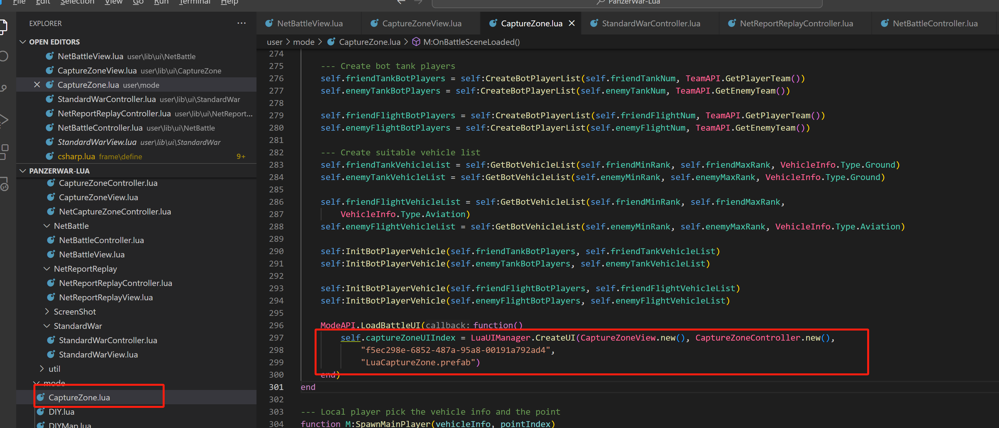

35. Custom ui interfaces
Before starting the tutorial, you should learn the Lua development of Panzer War first.
Create ui prefab
Create a UI prefab.
To generate the Lua view, you need to set prefixes for objects:
#btn_for Button component#img_for Image component#input_for InputField component#txt_for Text component#obj_for GameObject

Generate lua view
The UI code consists of two parts: the view code and the controller code.
Most of the view code can be generated by our tool.
The controller code can only be created by yourself.
You can look at and refer to our codes in the folder LuaProject/user/lib/ui.


Then the Lua view is pasted into your clipboard. You can press Ctrl+V in VS Code.

Create ui resource config


Pick your UI resources from here.

Click on "Pack all configs". The byte files will be generated at Build\Config.
Paste the byte file into the Mod directory.
Load ui in game
You can generate the UI through the following code. Replace the content in <> with your contents.
LuaUIManager.CreateUI(<YourViewInstance>, <YourControllerInstance>,
<ConfigGuid>,
<PrefabName>)
